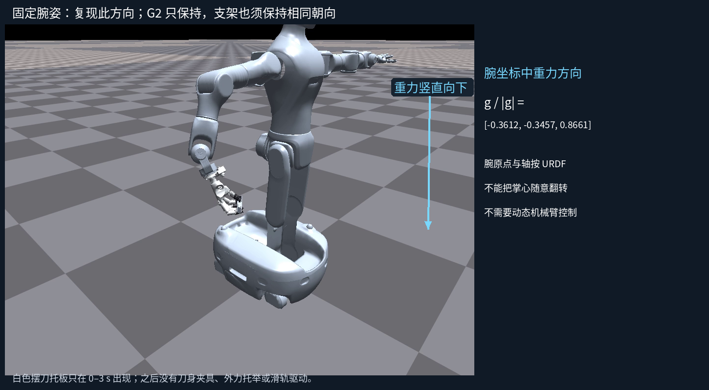
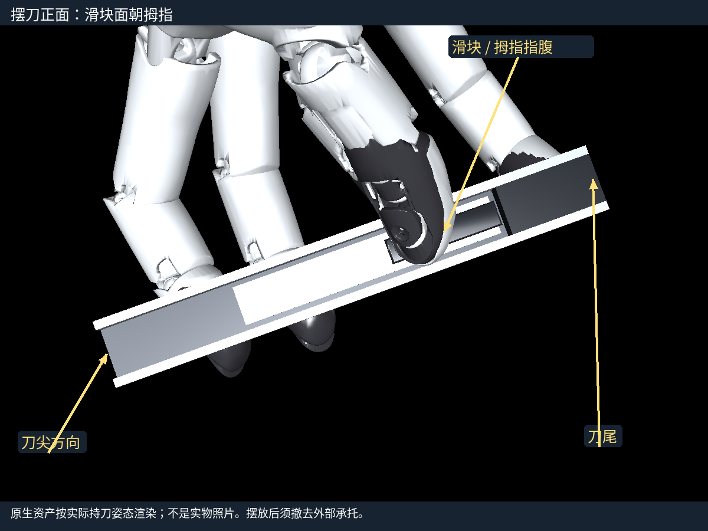
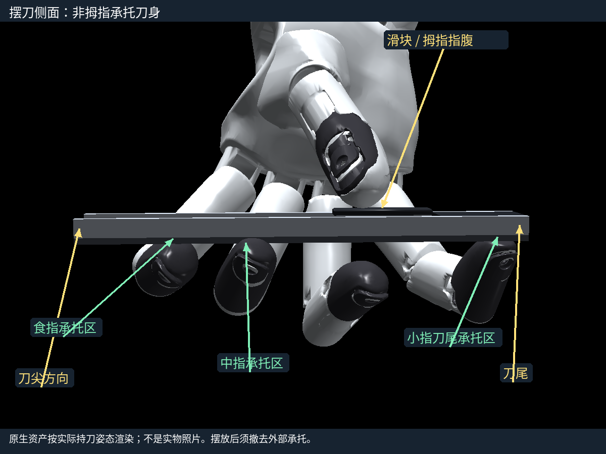
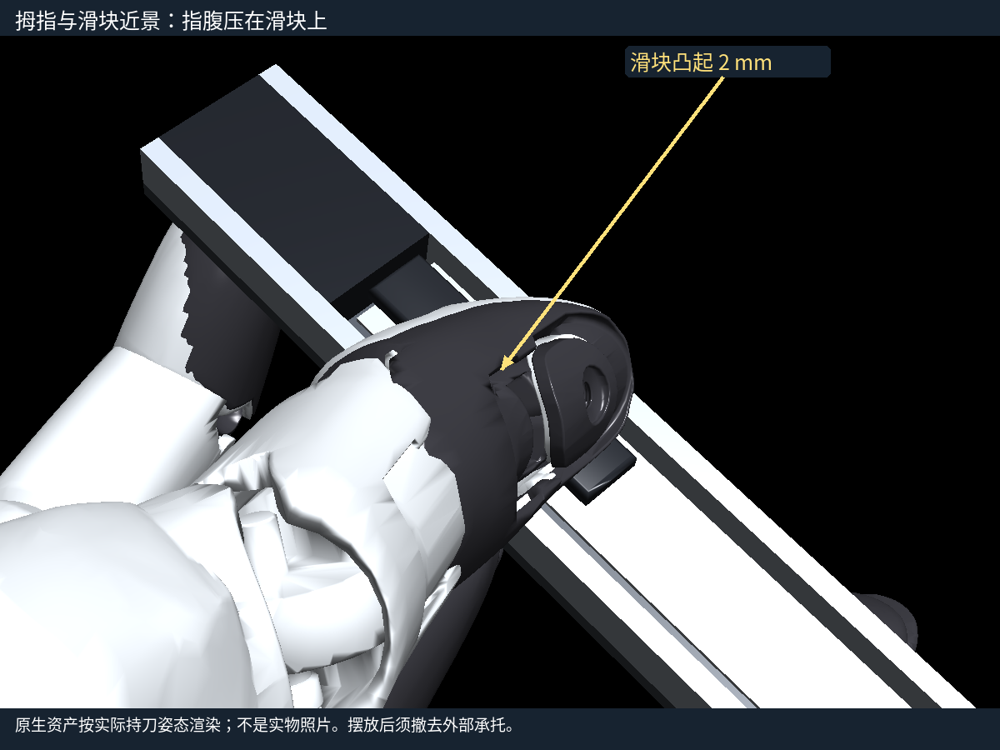
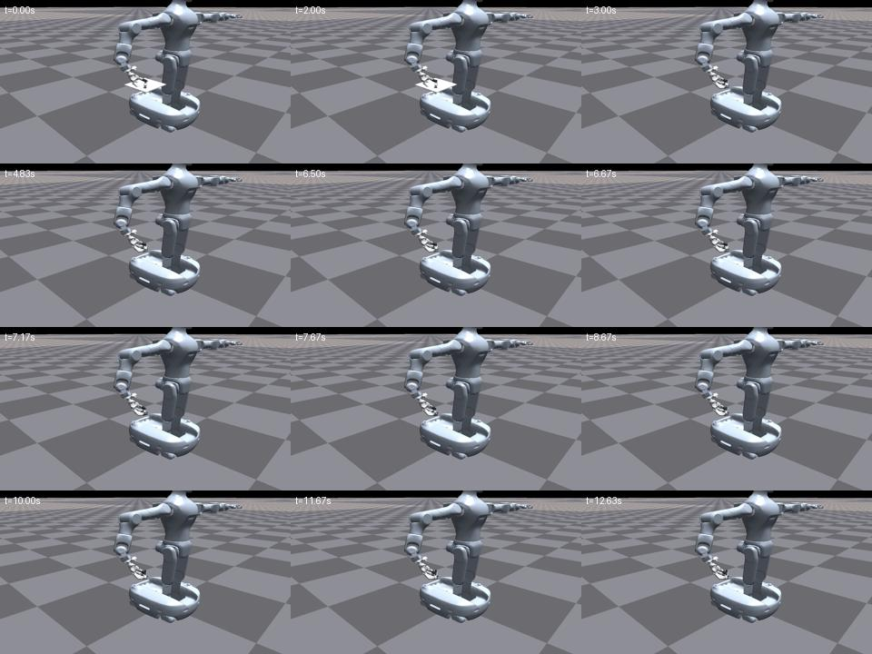
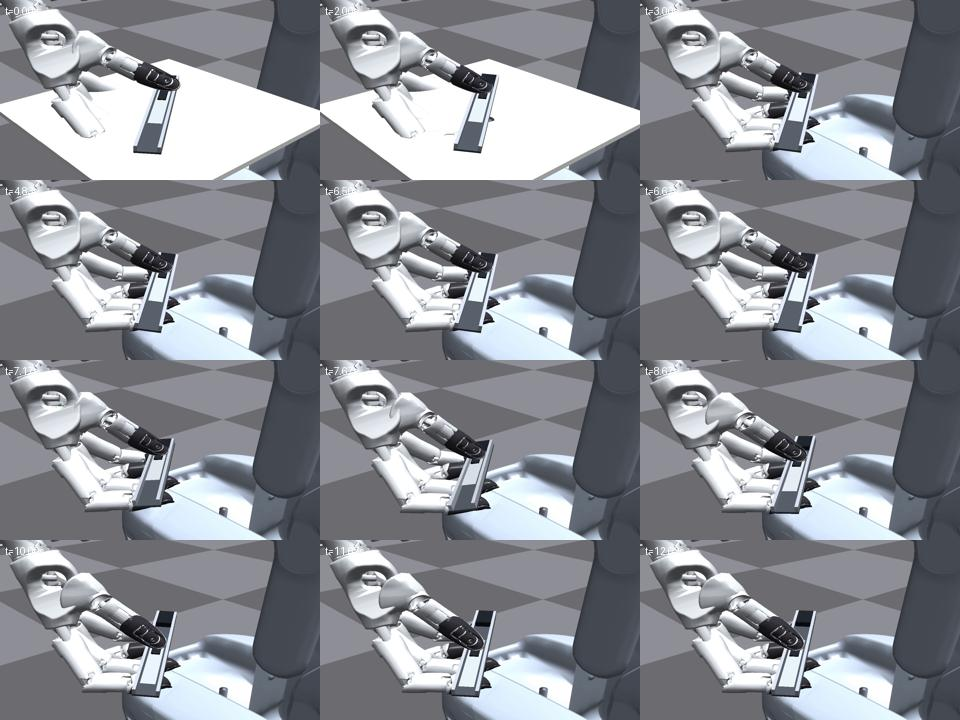

同一部署控制核心，最终 v6 标称仿真主动推进 32.42 mm，保持约1秒；1.25 N 条件推进28.45 mm。真机未接入、未执行。执行器／延迟误差检查仍有失败，现场先做局部响应和5 mm试推。
380帧／视角、30 fps、12.667秒。0–3秒临时摆刀托板；3秒撤托板；保持、隔离预热并采集50帧新历史；6.667秒开始推动，末态位置保持。无刀身夹具或主动滑轨驱动。全景和近景同期。




三个姿态图是实际持刀帧的原生资产渲染，不是实物照片，不增加任务成功证据。
| 类别 | 结论 |
|---|---|
| 软件 | 20关节映射、已发目标反馈、独立SDK进程、50真实历史、隔离预热、停止；模拟对象不代表真实设备。 |
| 仿真 | 最终完整启动32.42mm；1.25N28.45mm；有限摆放／估计与摩擦峰值检查通过。响应／延迟扰动失败，不能宣称可靠零样本。 |
| 硬件 | 待连接、核对轴／零位／限位／腕向、使能、独立持刀、局部响应、5mm试推及>20mm尺测视频。 |


已查看按时间排序的画面并用原生接触／行程日志交叉核对；没有把抽帧检查称为连续GUI播放。